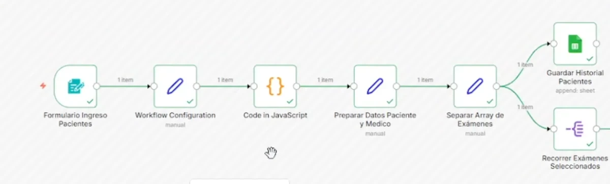
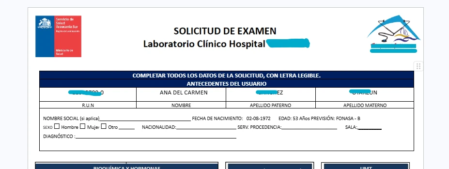
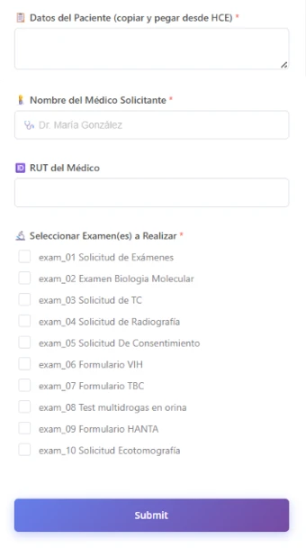

Autocompletado de exámenes médicos
Sistema desarrollado para un hospital del sur de Chile que completa automáticamente los exámenes médicos con apoyo de inteligencia artificial. El modelo propone el contenido de cada campo a partir del historial y de los datos ya ingresados, y el profesional clínico revisa y confirma antes de guardar.
El resultado es menos tiempo de digitación por atención, registros más consistentes entre unidades y trazabilidad de cada campo sugerido por el modelo frente al validado por la persona.
- 01Año
- 2026
- 02Cliente
- Hospital — sur de Chile
- 03Industria
- Salud · IA aplicada


